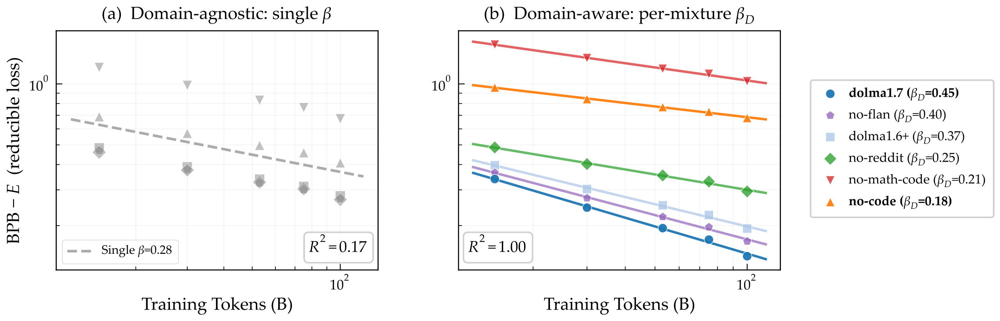
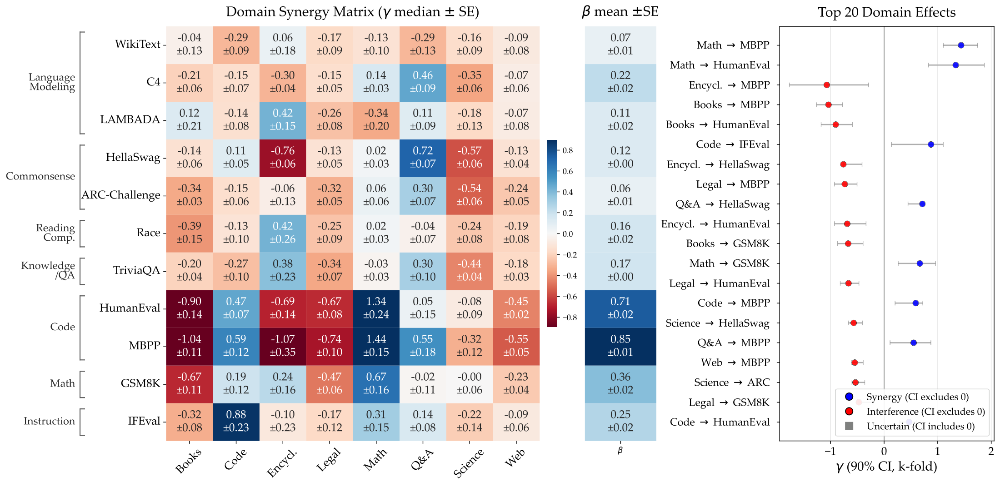
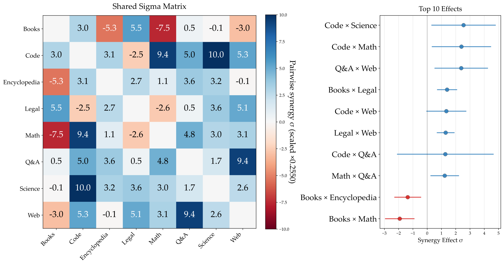

Machine learning progress is often attributed to scaling model size and dataset volume, yet the composition of data can be just as consequential. Empirical findings repeatedly show that combining datasets from different domains yields nontrivial interactions. For instance, adding code improves mathematical reasoning, while certain mixtures introduce interference that reduces model performance. We refer to these effects collectively as data synergy, where the contribution of multiple domains exceeds or falls short of the sum of their isolated contributions. In this work, we formalize and quantify data synergy in language model pretraining. Leveraging observational variation across open-weight LLMs with diverse pretraining mixtures, we estimate both direct domain-to-benchmark synergy (how one domain contributes to performance on another) and a second-order domain-domain synergy (capabilities that require co-occurrence of multiple domains). Our framework improves predictive accuracy over domain-agnostic scaling laws and recovers stable synergy estimates. We validate these estimates by training models on predicted optimal and predicted anti-optimal mixtures and confirm that our synergy estimates correctly predict performance rankings.
Classical scaling laws relate loss to parameter count and total tokens, and treat every token as equal. But models with the same total tokens and different mixtures land in very different places. On HumanEval, a single domain-agnostic exponent fits poorly (R2 = 0.17), while letting the exponent depend on the mixture fits almost perfectly (R2 = 1.00): removing code or math data visibly slows the rate at which more data helps.

HumanEval. The data exponent β falls from 0.45 under the full dolma1.7 mixture to 0.18 once code is removed.
We start from the Chinchilla form L(N, D) = L∞ + A N−α + B D−β and progressively make the data term composition-aware, while preserving the overall shape of the law.
First-order domain→benchmark synergy. Let uk be the fraction of pretraining tokens drawn from domain k. Each domain gets a coefficient γk that additively modifies the data scaling exponent, so its tokens reduce loss at rate β + γk instead of a single shared β. Each domain rescales the data by a factor set by both its token share uk and its absolute token count ukD:
Setting every γk = 0 recovers Chinchilla, so the coefficients are modifications to the data scaling exponent: a positive γk means tokens from domain k reduce loss faster than the baseline predicts (synergy), a negative one means slower (interference).
Second-order domain-domain synergy. Some capabilities only emerge when two domains co-occur in the corpus. We add a shared, symmetric interaction matrix Σ = {σkk′} with one pairwise term per domain pair. Its gain is bottlenecked by the scarcer domain (a softmin of the two per-domain log-token budgets), and since z̄k = 0 when a domain is absent, it vanishes unless both domains are present. Because it carries the same β as the baseline, the interaction can be written as a change in effective data size,
so the data term scales as (Deff)−β: co-occurring synergistic domains contribute “bonus tokens” (Deff > D), while interfering pairs shrink the effective dataset.
Estimation from observational data. Rather than training a large controlled sweep, we fit these laws across 52 open-weight models (70M-20B parameters) from multiple groups (GPT-Neo/J/NeoX, Pythia, DataDecide, OLMo, OpenLLaMA, and RedPajama-INCITE), whose documented pretraining mixtures we map to eight domains (books, code, encyclopedia, legal, math, Q&A, science, web) and evaluate on 11 benchmarks.
The strongest first-order synergies concentrate on code and math benchmarks (for example γmath = +1.34 and γcode = +0.47 on HumanEval), while books and encyclopedia data reliably interfere with code benchmarks. The first-order model reaches a median cross-validated R2 of 0.906, versus 0.41 (HumanEval) and 0.20 (MBPP) for the domain-agnostic baseline.

The second-order fit adds the pairwise story: code × science (σ = +2.55) and code × math (+2.40) are the strongest complements, worth more together than their first-order effects predict, while math × books is the clearest diluting pair. That last one is actionable: if a target benchmark wants math, tokens spent on books are not merely neutral filler, they subtract.

We show that these estimated synergies and the domain-aware scaling laws predict the performance of held-out models more accurately. Finally, these estimates are actionable. We use the fitted laws to predict optimal and anti-optimal pretraining mixtures for three target tasks and training models from scratch at 30M and 150M parameters, and find that the optimal mixture outperforms the anti-optimal by up to 31% bits-per-byte on HumanEval (relative to a balanced baseline).
These results turn the intuition that data composition matters into a measurable quantity we can optimize. We hope domain-aware scaling laws become a practical tool for curating pretraining mixtures, and a starting point for studying synergy across modalities, languages, and finer domain splits.
@article{hamidieh2026domain,
title={Domain-Aware Scaling Laws Uncover Data Synergy},
author={Hamidieh, Kimia and Mackey, Lester and Alvarez-Melis, David},
journal={arXiv preprint arXiv:2607.11052},
year={2026},
}